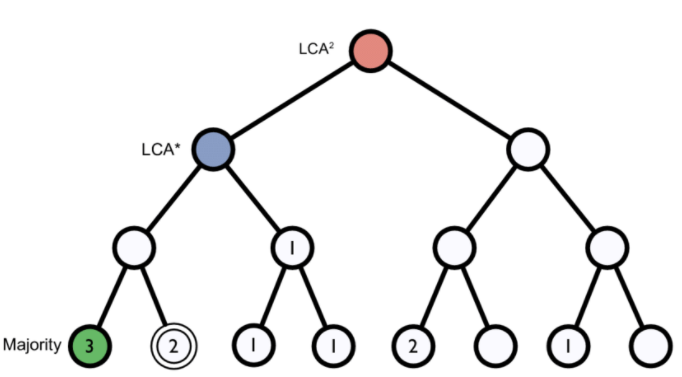

Taxonomic Assignment
Last updated on 2025-04-06 | Edit this page
Overview
Questions
- How can I know to which taxa my sequences belong?
Objectives
- Understand how taxonomic assignment works.
- Use Kraken to assign taxonomies to reads and contigs.
- Visualize taxonomic assignations in graphics.
What is a taxonomic assignment?
A taxonomic assignment is a process of assigning an Operational Taxonomic Unit (OTU, that is, groups of related individuals) to sequences that can be reads or contigs. Sequences are compared against a database constructed using complete genomes. When a sequence finds a good enough match in the database, it is assigned to the corresponding OTU. The comparison can be made in different ways.
Strategies for taxonomic assignment
There are many programs for doing taxonomic mapping, and almost all of them follow one of the following strategies:
BLAST: Using BLAST or DIAMOND, these mappers search for the most likely hit for each sequence within a database of genomes (i.e., mapping). This strategy is slow.
Markers: They look for markers of a database made a priori in the sequences to be classified and assigned the taxonomy depending on the hits obtained.
K-mers: A genome database is broken into pieces of length k to be able to search for unique pieces by taxonomic group, from a lowest common ancestor (LCA), passing through phylum to species. Then, the algorithm breaks the query sequence (reads/contigs) into pieces of length k, looks for where these are placed within the tree and make the classification with the most probable position.
 Figure 1. Lowest common ancestor assignment example.
{kind=link}
Abundance bias
When you do the taxonomic assignment of metagenomes, a key result is the abundance of each taxon or OTU in your sample. The absolute abundance of a taxon is the number of sequences (reads or contigs, depending on what you did) assigned to it. Moreover, its relative abundance is the proportion of sequences assigned to it. It is essential to be aware of the many biases that can skew the abundances along the metagenomics workflow, shown in the figure, and that because of them, we may not be obtaining the actual abundance of the organisms in the sample.
 Figure 2. Abundance biases during a metagenomics protocol.
Figure 2. Abundance biases during a metagenomics protocol.
Discussion: Taxonomic level of assignment
What do you think is harder to assign, a species (like E. coli) or a phylum (like Proteobacteria)?
Using Kraken 2
Kraken 2 is the
newest version of Kraken, a taxonomic classification system using exact
k-mer matches to achieve high accuracy and fast classification speeds.
kraken2 is already installed in the metagenomics
environment, let us have a look at kraken2
help.
OUTPUT
Need to specify input filenames!
Usage: kraken2 [options] <filename(s)>
Options:
--db NAME Name for Kraken 2 DB
(default: none)
--threads NUM Number of threads (default: 1)
--quick Quick operation (use first hit or hits)
--unclassified-out FILENAME
Print unclassified sequences to filename
--classified-out FILENAME
Print classified sequences to filename
--output FILENAME Print output to filename (default: stdout); "-" will
suppress normal output
--confidence FLOAT Confidence score threshold (default: 0.0); must be
in [0, 1].
--minimum-base-quality NUM
Minimum base quality used in classification (def: 0,
only effective with FASTQ input).
--report FILENAME Print a report with aggregate counts/clade to file
--use-mpa-style With --report, format report output like Kraken 1's
kraken-mpa-report
--report-zero-counts With --report, report counts for ALL taxa, even if
counts are zero
--report-minimizer-data With --report, report minimizer, and distinct minimizer
count information in addition to normal Kraken report
--memory-mapping Avoids loading database into RAM
--paired The filenames provided have paired-end reads
--use-names Print scientific names instead of just taxids
--gzip-compressed Input files are compressed with gzip
--bzip2-compressed Input files are compressed with bzip2
--minimum-hit-groups NUM
Minimum number of hit groups (overlapping k-mers
sharing the same minimizer) needed to make a call
(default: 2)
--help Print this message
--version Print version information
If none of the *-compressed flags are specified, and the filename provided
is a regular file, automatic format detection is attempted.
In the help, we can see that in addition to our input files, we also need a database to compare them. The database you use will determine the result you get for your data. Imagine you are searching for a recently discovered lineage that is not part of the available databases. Would you find it?
There are several databases compatible to be used with kraken2 in the taxonomical assignment process.
Unfortunately, even the smallest Kraken database Minikraken, which
needs 8Gb of free RAM, is not small enough to be run by the machines we
are using, so we will not be able to run
kraken2. We can check our available RAM with
free -hto be sure of this.
OUTPUT
total used free shared buff/cache available
Mem: 3.9G 272M 3.3G 48M 251M 3.3G
Swap: 0B 0B 0BTaxonomic assignment of metagenomic reads
As we have learned, taxonomic assignments can be attempted before the
assembly. In this case, we would use FASTQ files as inputs, which would
be JP4D_R1.trim.fastq.gz and
JP4D_R2.trim.fastq.gz. And the outputs would be two files:
the report JP4D.report and the kraken file
JP4D.kraken.
To run kraken2, we would use a command like this:
No need to run this
BASH
$ mkdir TAXONOMY_READS
$ kraken2 --db kraken-db --threads 8 --paired JP4D_R1.trim.fastq.gz JP4D_R2.trim.fastq.gz --output TAXONOMY_READS/JP4D.kraken --report TAXONOMY_READS/JP4D.reportSince we cannot run kraken2 here, we precomputed its
results in a server, i.e., a more powerful machine. In the server we ran
kraken2 and obtainedJP4D-kraken.kraken and
JP4D.report.
Let us look at the precomputed outputs of kraken2 for
our JP4D reads.
OUTPUT
U MISEQ-LAB244-W7:156:000000000-A80CV:1:1101:19691:2037 0 250|251 0:216 |:| 0:217
U MISEQ-LAB244-W7:156:000000000-A80CV:1:1101:14127:2052 0 250|238 0:216 |:| 0:204
U MISEQ-LAB244-W7:156:000000000-A80CV:1:1101:14766:2063 0 251|251 0:217 |:| 0:217
C MISEQ-LAB244-W7:156:000000000-A80CV:1:1101:15697:2078 2219696 250|120 0:28 350054:5 1224:2 0:1 2:5 0:77 2219696:5 0:93 |:| 379:4 0:82
U MISEQ-LAB244-W7:156:000000000-A80CV:1:1101:15529:2080 0 250|149 0:216 |:| 0:115
U MISEQ-LAB244-W7:156:000000000-A80CV:1:1101:14172:2086 0 251|250 0:217 |:| 0:216
U MISEQ-LAB244-W7:156:000000000-A80CV:1:1101:17552:2088 0 251|249 0:217 |:| 0:215
U MISEQ-LAB244-W7:156:000000000-A80CV:1:1101:14217:2104 0 251|227 0:217 |:| 0:193
C MISEQ-LAB244-W7:156:000000000-A80CV:1:1101:15110:2108 2109625 136|169 0:51 31989:5 2109625:7 0:39 |:| 0:5 74033:2 31989:5 1077935:1 31989:7 0:7 60890:2 0:105 2109625:1
C MISEQ-LAB244-W7:156:000000000-A80CV:1:1101:19558:2111 119045 251|133 0:18 1224:9 2:5 119045:4 0:181 |:| 0:99This information may need to be clarified. Let us take out our cheatsheet to understand some of its components:
| Column example | Description |
|---|---|
| C | Classified or unclassified |
| MISEQ-LAB244-W7:156:000000000-A80CV:1:1101:15697:2078 | FASTA header of the sequence |
| 2219696 | Tax ID |
| 250:120 | Read length |
| 0:28 350054:5 1224:2 0:1 2:5 0:77 2219696:5 0:93 379:4 0:82 | kmers hit to a taxonomic ID e.g., tax ID 350054 has five hits, tax ID 1224 has two hits, etc. |
The Kraken file could be more readable. So let us look at the report file:
OUTPUT
78.13 587119 587119 U 0 unclassified
21.87 164308 1166 R 1 root
21.64 162584 0 R1 131567 cellular organisms
21.64 162584 3225 D 2 Bacteria
18.21 136871 3411 P 1224 Proteobacteria
14.21 106746 3663 C 28211 Alphaproteobacteria
7.71 57950 21 O 204455 Rhodobacterales
7.66 57527 6551 F 31989 Rhodobacteraceae
1.23 9235 420 G 1060 Rhodobacter
0.76 5733 4446 S 1063 Rhodobacter sphaeroides| Column example | Description |
|---|---|
| 78.13 | Percentage of reads covered by the clade rooted at this taxon |
| 587119 | Number of reads covered by the clade rooted at this taxon |
| 587119 | Number of reads assigned directly to this taxon |
| U | A rank code, indicating (U)nclassified, (D)omain, (K)ingdom, (P)hylum, (C)lass, (O)rder, (F)amily, (G)enus, or (S)pecies. All other ranks are simply ‘-’. |
| 0 | NCBI taxonomy ID |
| unclassified | Indented scientific name |
Taxonomic assignment of the contigs of a MAG
We now have the taxonomic identity of the reads of the whole metagenome, but we need to know to which taxon our MAGs correspond. For this, we have to make the taxonomic assignment with their contigs instead of its reads because we do not have the reads corresponding to a MAG separated from the reads of the entire sample.
For this, the kraken2 is a little bit different; here,
we can look at the command for the JP4D.001.fasta MAG:
No need to run this
BASH
$ mkdir TAXONOMY_MAG
$ kraken2 --db kraken-db --threads 12 -input JP4D.001.fasta --output TAXONOMY_MAG/JP4D.001.kraken --report TAXONOMY_MAG/JP4D.001.reportThe results of this are pre-computed in the
~/dc_workshop/taxonomy/mags_taxonomy/ directory
OUTPUT
JP4D.001.kraken
JP4D.001.reportOUTPUT
50.96 955 955 U 0 unclassified
49.04 919 1 R 1 root
48.83 915 0 R1 131567 cellular organisms
48.83 915 16 D 2 Bacteria
44.40 832 52 P 1224 Proteobacteria
19.37 363 16 C 28216 Betaproteobacteria
16.22 304 17 O 80840 Burkholderiales
5.66 106 12 F 506 Alcaligenaceae
2.72 51 3 G 517 Bordetella
1.12 21 21 S 2163011 Bordetella sp. HZ20
.
.
.Looking at the report, we can see that half of the contigs are unclassified and that a tiny proportion of contigs have been assigned an OTU. This result is weird because we expected only one genome in the bin.
To exemplify how a report of a complete and not contaminated MAG should look like this; let us look at the report of this MAG from another study:
OUTPUT
100.00 108 0 R 1 root
100.00 108 0 R1 131567 cellular organisms
100.00 108 0 D 2 Bacteria
100.00 108 0 P 1224 Proteobacteria
100.00 108 0 C 28211 Alphaproteobacteria
100.00 108 0 O 356 Rhizobiales
100.00 108 0 F 41294 Bradyrhizobiaceae
100.00 108 0 G 374 Bradyrhizobium
100.00 108 108 S 2057741 Bradyrhizobium sp. SK17Visualization of taxonomic assignment results
After we have the taxonomy assignation, what follows is some visualization of our results. Krona is a hierarchical data visualization software. Krona allows data to be explored with zooming and multi-layered pie charts and supports several bioinformatics tools and raw data formats. To use Krona in our results, let us first go into our taxonomy directory, which contains the pre-calculated Kraken outputs.
Krona
With Krona, we will explore the taxonomy of the JP4D.001 MAG.
Krona is called with the ktImportTaxonomy command that
needs an input and an output file.
In our case, we will create the input file with columns three and four
from JP4D.001.kraken file.
Now we call Krona in our JP4D.001.krona.input file and
save results in JP4D.001.krona.out.html.
OUTPUT
Loading taxonomy...
Importing JP4D.001.krona.input...
[ WARNING ] The following taxonomy IDs were not found in the local database and were set to root
(if they were recently added to NCBI, use updateTaxonomy.sh to update the local
database): 1804984 2109625 2259134And finally, open another terminal on your local computer, download the Krona output and open it on a browser.
BASH
$ scp dcuser@ec2-3-235-238-92.compute-1.amazonaws.com:~/dc_workshop/taxonomy/JP4D.001.krona.out.html . You will see a page like this:
{kind=link}
Exercise 1: Exploring Krona visualization
Try double-clicking on the pie chart segment representing Bacteria and see what happens. What percentage of bacteria is represented by the genus Paracoccus?
Hint: A search box is in the window’s top left corner.
2% of Bacteria corresponds to the genus Paracoccus in this sample. In the top right of the window, we see little pie charts that change whenever we change the visualization to expand certain taxa.
Pavian
Pavian is another visualization tool that allows comparison between multiple samples. Pavian should be locally installed and needs R and Shiny, but we can try the Pavian demo WebSite to visualize our results.
First, we need to download the files needed as inputs in Pavian; this
time, we will visualize the assignment of the reads of both samples:
JC1A.report and JP4D.report.
These files correspond to our Kraken reports. Again in our local
machine, let us use the scp command.
We go to the Pavian demo WebSite, click on Browse, and choose our reports. You need to select both reports at the same time.
{kind=link}
We click on the Results Overview tab.

We click on the Sample tab.

We can look at the abundance of a specific taxon by clicking on it.

We can look at a comparison of both our samples in the Comparison tab.

Discussion: Unclassified reads
As you can see, a percentage of our data could not be assigned to
belong to a specific OTU.
Which factors can affect the taxonomic assignation so that a read is
unclassified?
Unclassified reads can be the result of different
factors that can go from sequencing errors to problems with the
algorithm being used to generate the result. The widely used
Next-generation sequencing (NGS) platforms, showed average error
rate of 0.24±0.06% per base. Besides the sequencing error, we need
to consider the status of the database being used to perform the
taxonomic assignation.
All the characterized genomes obtained by different research groups are
scattered in different repositories, pages, and banks in the cloud. Some
are still unpublished. Incomplete databases can affect the performance
of the taxonomic assignation. Imagine that the dominant OTU in your
sample belongs to a lineage that has never been characterized and does
not have a public genome available to be used as a template for the
database. This possibility makes the assignation an impossible task and
can promote the generation of false positives because the algorithm will
assign a different identity to all those reads.
Key Points
- A database with previously gathered knowledge (genomes) is needed for taxonomic assignment.
- Taxonomic assignment can be done using Kraken.
- Krona and Pavian are web-based tools to visualize the assigned taxa.